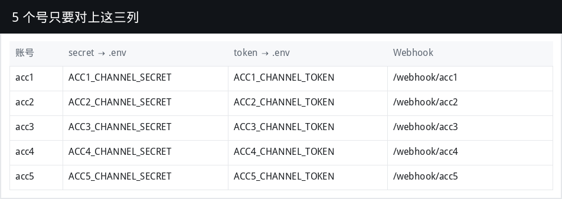
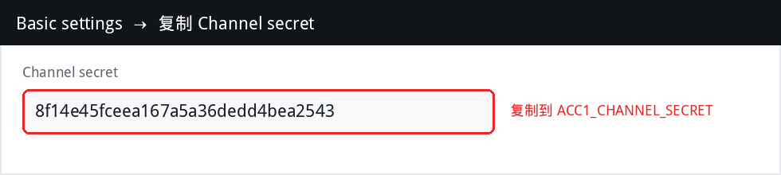
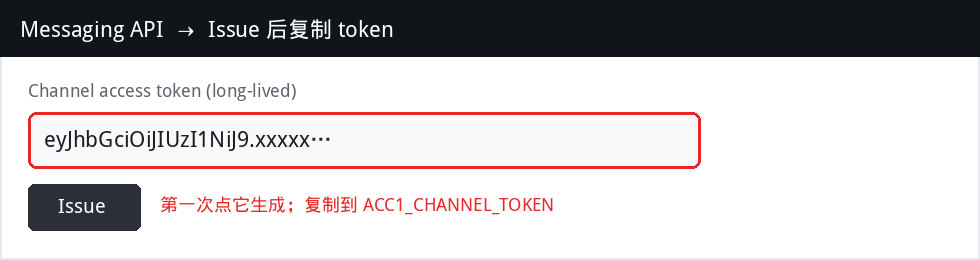
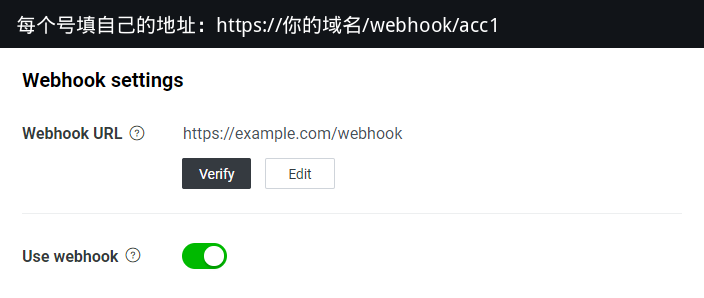
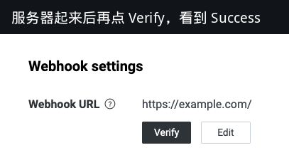

每个号只要 2 个密钥 + 1 条 webhook。一台小服务器就能托管 5 个号。
| 复制什么 | 在哪一页 | 填到哪里 |
|---|---|---|
| Channel secret | Basic settings | ACC1_CHANNEL_SECRET |
| Channel access token | Messaging API → Issue | ACC1_CHANNEL_TOKEN |
二号就改成 ACC2_…，一直到 acc5。Webhook 分别是 /webhook/acc1 … /webhook/acc5。



重新点 Issue 会让旧 token 立刻失效。secret 只用来验签，token 才用来发消息。
还在 Messaging API 页。5 个号各填一条（把域名换成你的）：
https://你的域名/webhook/acc1 https://你的域名/webhook/acc2 https://你的域名/webhook/acc3 https://你的域名/webhook/acc4 https://你的域名/webhook/acc5

准备：一台 VPS（日本/新加坡更好）+ 一个域名 A 记录指到这台机器。安全组放行 80 和 443。
sudo apt-get update sudo apt-get install -y git docker.io docker-compose-v2 sudo usermod -aG docker "$USER" # 重新登录一次 git clone <本仓库> && cd <仓库>/line-hub cp .env.example .env nano .env # 填 LINE_DOMAIN 和 5 套密钥 docker compose up -d --build curl -I https://你的域名/healthz # 要 200，且没有 SSL 报错
.env 里 LINE_DOMAIN=你的域名。Caddy 会自动申请证书。看到 loaded accounts: acc1 … acc5 就起来了。

[客服N号] ping。| 现象 | 处理 |
|---|---|
| Verify 报证书错误 | 域名还没解析到这台机器，或 80/443 没放行 |
| Verify 403 | 这个号的 secret 贴错到另一个 ACC |
| Verify 成功但没回消息 | Use webhook 没打开，或自动回复还开着在抢答 |
| 发不出消息 401 | token 重新 Issue 过，把新的写进 .env 再 docker compose up -d |